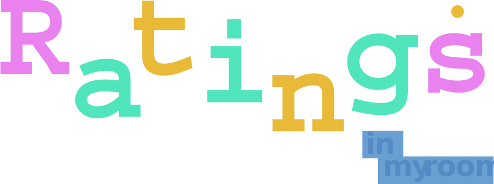
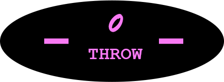

What is the Standards
내 방에 있는 눈에 보이는 모든 물건들을 점수 매긴다. 무엇을 기준으로 점수를 매기는가. 나만의 기준점을 만들어 앞으로의 물건 운명을 결정한다. 집 앞 쓰레기통으로 버려지느냐 , 버려지지 않고 방구석 속 다시 자리잡고 소중히 남아있느냐를 결정 짓는다. 손때가 가득한 물건을 좋아할 만한 사람은 많이 없을거다. 하지만 나는 다르다. 내 손때가 얼마나 묻어있냐는 어쩌면 나에게 가장 중요한 기준점이 될 수 있겠다. 사람마다 생활환경은 다르다. 판매자가 물건에 부여한 역할을 내가 그대로 수용한다는 것은 있을 수 없는 일 일지 모르겠다. 역할을 이미 부여받은 물건에게 내가 또 다른 역할을 부여하는 것. 그것이 내가 생각하는 가성비고 내 기준점이다. 물론 여기서도 예외는 존재한다. 내가 앞서 말한 기준점에 미치지 못하는 물건도 높은 점수를 받을 수 있는 기회는 충분하다. 내 감성을 건들일 만한 의미부여가 존재하면 된다.